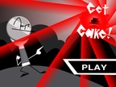
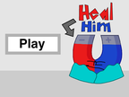
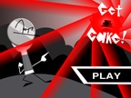
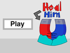

Games made for a discord camp creatively titled "My Camp". Most of the games here were made in the span of a few days around 2018. Every game can be played in its original form on scratch here.
Most games are played with keyboard and mouse and typically use arrows and space if not specified in-game. You can also check the original projects for their controls.
 


